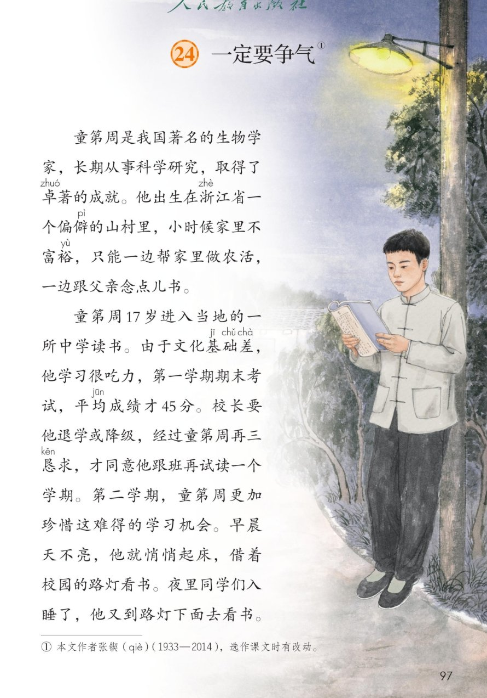
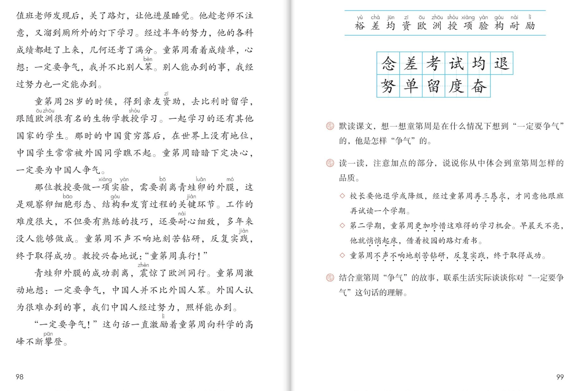

×
🔊 手机听不到声音怎么办？
① 先把手机
媒体音量调大 ，确认没开静音、没连蓝牙耳机；在微信里打开的，点右上角「⋯ → 用浏览器打开」。
② 还是没声音？到应用商店免费下载
Microsoft Edge 浏览器 （它自带朗读发声），用它打开本页面就能出声。
③ 换了 Edge 仍然没声音，说明这部手机的
硬件/系统不支持 网页朗读（多为老旧机型）；近几年买的新手机一般都能正常播放。
→ 打开声音自检
📚 第 24 课《一定要争气》· 有声图文带读
统编版语文 · 第八单元·阅读 · 课本 P97~99 · 张锲 · 素养升级版（对标 2022 课标第二学段）
课文 7 个自然段
素养目标 4
会认字 12
会写字 11
听写词 12
带着问题默读探究 6 卡
深入理解 8 题
🎧 这样学（可随时点任意一句、一个字、一个词单独听）： ① 听读课文 ——一句一句读；再带着两个问题默读 （课后题①）：童第周是在什么情况下想到“一定要争气”的？他是怎样“争气”的？② 学字词 ——12 个会认字、11 个会写字，点一个读一个（差是多音字，注意听）。③ 词语·听写 ——听写 12 个词（读两遍→你写→报答案→听示范句），再听 4 组近义词辨析。④ 深入理解 ——8 道题（认知 / 理解 / 运用 / 拓展），先想后看。⑤ 争气之路 ——按基础差→路灯读书→第一次争气→剥蛙卵→为国争气的顺序理一理，再听分角色朗读。🌟 本单元任务：学习带着问题默读，理解课文内容；感悟美好品质，获取精神力量！
📌 本单元语文要素 ——单元导语（P95 照录）：美好的品质，犹如温暖的阳光，带给我们希望和力量 ；要点：学习带着问题默读，理解课文内容 ；学写一件简单的事 。
🀄 文化自信
🀄 文化自信
读童第周为中国人争气的故事，感受科学家爱国、自强的精神，为祖国感到自豪。
🗣 语言运用
🗣 语言运用
认识 12 个生字，会写 11 个字；积累再三恳求、不声不响、刻苦钻研、反复实践等词语。
💡 思维能力
💡 思维能力
学习带着问题默读，理解课文内容：能说出童第周在什么情况下想到争气、怎样争气，理清两次争气的经过。
🎨 审美创造
🎨 审美创造
结合加点词体会童第周勤奋刻苦、为国争光的美好品质，联系生活实际说出自己对争气的理解。
点段前的 ①②③ 听整段
🔁 跟读模式：关
👁 隐藏注音（自测用）
字卡上的拼音标的是本课要认的字，读音来自课本生字表
🎤 朗读要求（老师标准） 差 是多音字；心情 ：心想的话读得坚定 ，教授的话读得兴奋 ；再三恳求、悄悄起床、不声不响 这些加点词稍稍加重；铿锵有力 ，“不断攀登”放慢、上扬。
🤫 默读小提示（带着问题默读——本单元核心本领） 听读 ——点句子听老师读；第二步 带着问题默读 ——不出声、不指读，带着课后题①的两个问题，边读边圈出三次心想和 45 分、半年这些数字 ；第三步 交流 ——把找到的答案按顺序说一说。
①
童第周是我国著名的生物学家，长期从事科学研究，取得了卓著的成就。
他出生在浙江省一个偏僻的山村里，小时候家里不富裕，只能一边帮家里做农活，一边跟父亲念点儿书。
📌 这一段讲：人物介绍：童第周是我国著名的生物学家；他出身偏僻山村，小时候家里不富裕，一边做农活一边念书。
②
童第周17岁进入当地的一所中学读书。
由于文化基础差，他学习很吃力，第一学期期末考试，平均成绩才45分。
校长要他退学或降级，经过童第周再三恳求，才同意他跟班再试读一个学期。
第二学期，童第周更加珍惜这难得的学习机会。
早晨天不亮，他就悄悄起床，借着校园的路灯看书。
夜里同学们入睡了，他又到路灯下面去看书。
📌 这一段讲：第一次争气（上）：文化基础差、平均成绩才45分，校长要他退学或降级，他再三恳求才获准试读一学期；他更加珍惜机会，早晚在路灯下读书。
③
值班老师发现后，关了路灯，让他进屋睡觉。
他趁老师不注意，又溜到厕所外的灯下学习。
经过半年的努力，他的各科成绩都赶了上来，几何还考了满分。
童第周看着成绩单，心想：一定要争气，我并不比别人笨。
别人能办到的事，我经过努力也一定能办到。
📌 这一段讲：第一次争气（下）：他趁老师不注意又溜到灯下学习，半年努力各科赶上来、几何满分；他心想：一定要争气，我并不比别人笨。
④
童第周28岁的时候，得到亲友资助，去比利时留学，跟随欧洲很有名的生物学教授学习。
一起学习的还有其他国家的学生。
那时的中国贫穷落后，在世界上没有地位，中国学生常常被外国同学瞧不起。
童第周暗暗下定决心，一定要为中国人争气。
📌 这一段讲：第二次争气（上）：28岁去比利时留学，那时的中国贫穷落后，中国学生常被瞧不起；童第周暗暗下定决心，一定要为中国人争气。
⑤
那位教授要做一项实验，需要剥离青蛙卵的外膜，这是观察卵细胞形态、结构和发育过程的关键环节。
工作的难度很大，不但要有熟练的技巧，还要耐心细致，多年来没人能够做成。
童第周不声不响地刻苦钻研，反复实践，终于取得成功。
教授兴奋地说：“童第周真行！”
📌 这一段讲：第二次争气（中）：剥离青蛙卵外膜难度极大、多年没人做成；童第周不声不响刻苦钻研、反复实践，终于成功，教授夸他真行。
⑥
青蛙卵外膜的成功剥离，震惊了欧洲同行。
童第周激动地想：一定要争气，中国人并不比外国人笨。
外国人认为很难办到的事，我们中国人经过努力，照样能办到。
📌 这一段讲：第二次争气（下）：剥蛙卵成功震惊欧洲同行；童第周激动地想：中国人并不比外国人笨，外国人难办到的事，中国人照样能办到。
⑦
“一定要争气！”这句话一直激励着童第周向科学的高峰不断攀登。
📌 这一段讲：总结：一定要争气这句话，一直激励着童第周向科学的高峰不断攀登。
🤔 想一想（点我可跳过）
双页宽图自动占整行

第 97 页 · 课文（前半）

第 98~99 页 · 课文（后半）/ 认字写字与课后练习（双页）
📖 人教版《语文》三年级上册 · 课本第 97~99 页 · 图片仅供个人学习，版权归人民教育出版社所有
📚 注释① 本文作者张锲（qiè）（1933—2014），选作课文时有改动。
点一个字，听读音、词语和在课文里的句子（差是多音字，注意听）
结构、部首、笔画与书写提示为通用规范，供参考，以教材和老师的指导为准
念niàn
想念
上下 · 心 · 8画
上面的今字撇捺舒展，下面的心字要写得宽而稳，托住上面。
差chà
差别
半包围 · 工 · 9画
先写羊字头，竖要长，最后写工字；笔顺是点、撇、横、横、横、撇、工——按老师示范的笔顺写。
考kǎo
考试
半包围 · 耂 · 6画
上面的耂字撇要舒展，下面的与字横折弯钩要写得圆转有力。
试shì
考试
左右 · 讠 · 8画
言字旁的点要正，右边的式字斜钩要舒展，不要多加一撇。
均jūn
平均
左右 · 土 · 7画
土字旁写窄，右边的匀字撇折要小巧，里面一点不能丢。
退tuì
退学
半包围 · 辶 · 9画
先写里面的艮字，再写走之底，平捺要托住上面，一波三折。
努nǔ
努力
上下 · 力 · 7画
上面是奴字，要写紧凑，下面的力字横折钩有力，撇要穿插进去。
单dān
名单
独体 · 十 · 8画
两点左右对称，中间的田字写扁，最后一横要长，竖写在正中。
留liú
留学
上下 · 田 · 10画
上面的部件笔画多，要写紧凑，下面的田字写稳，整个字上收下放。
度dù
态度
半包围 · 广 · 9画
广字头撇要舒展，里面的廿字和又字写紧凑，捺画要托住。
奋fèn
奋斗
上下 · 大 · 8画
上面的大字撇捺舒展，盖住下面的田字，田字写得扁而稳。
点一行，听读这一组词语
念 想念 念书 纪念
差 差别 差距 差不多
考 考试 考上 思考
奋 奋斗 兴奋 勤奋
读两遍 → 你在纸上写 → 报答案 → 听示范句
准备听写 · 共 12 个词
○ ○ ○
点下面的「开始听写」，听到一个词就写一个词。
▶ 开始听写
🔁 再读一遍
👁 看答案
点词听读，点句子听示范句，再自己说一句
1 想念 本课词
示范句：我很想念远方的奶奶。
✏️ 我也能说：我想念谁。
2 差别 本课词
示范句：这两幅画差别很大。
✏️ 我也能说：什么和什么差别大。
3 考试 本课词
示范句：期末考试，他考得很好。
✏️ 我也能说：什么考试怎么样。
4 考上 本课词
示范句：姐姐考上了心仪的中学。
✏️ 我也能说：谁考上了什么。
5 平均 本课词
示范句：把点心平均分给三个小朋友。
✏️ 我也能说：把什么平均分。
6 退学 本课词
示范句：他不愿退学，再三恳求再读一个学期。
✏️ 我也能说：谁不愿退学。
7 努力 本课词
示范句：经过努力，他的成绩赶了上来。
✏️ 我也能说：经过什么赶上来。
8 名单 本课词
示范句：老师在名单上念到了我的名字。
✏️ 我也能说：名单上有谁。
9 留学 本课词
示范句：童第周二十八岁去比利时留学。
✏️ 我也能说：谁去留学。
10 态度 本课词
示范句：他学习的态度非常认真。
✏️ 我也能说：谁的态度怎么样。
11 奋斗 本课词
示范句：幸福的生活要靠奋斗得来。
✏️ 我也能说：什么样的生活靠奋斗。
12 争气 本课词
示范句：一定要争气，这句话激励着童第周。
✏️ 我也能说：一定要怎么样。
相同点 / 不一样在哪 / 各造一句
恳求 — 请求
相同：都表示向别人提出愿望，希望得到同意。
不一样：恳求 程度更深，是诚恳、迫切地请求；请求 是一般地提出要求。
恳求：经过童第周再三恳求，才同意他跟班再试读一个学期。
珍惜 — 爱惜
相同：都表示看重、不随便浪费。
不一样：珍惜 多用于机会、时间、友谊这类抽象事物；爱惜 多用于粮食、书本等具体东西。
珍惜：童第周更加珍惜这难得的学习机会。
钻研 — 研究
相同：都表示深入地探求、弄明白。
不一样：钻研 偏重下苦功夫、反复深究；研究 用法更广，可以指各种探求活动。
钻研：童第周不声不响地刻苦钻研。
著名 — 有名
相同：都表示名气很大。
不一样：著名 是书面语，多用于人物、地方；有名 更口语，用得更广。
著名：童第周是我国著名的生物学家。
第三行正是课后题②的加点词
童第周的三次心想 成绩单前：一定要争气，我并不比别人笨／留学时：一定要为中国人争气／剥卵成功后：一定要争气，中国人并不比外国人笨
课文里的数字 17岁进中学 平均成绩才45分 28岁去比利时留学 半年赶上来
课后题②的加点词 再三恳求 更加珍惜 悄悄起床 不声不响 刻苦钻研 反复实践
美好品质 勤奋刻苦 不肯服输 踏实坚持 为国争光
点一张卡，听这条默读线索
上一课我们认识了文言文里的司马光，这一课再来认识科学家童第周——带着问题默读 ，把两次“争气”的故事读明白。
❓ 带着问题默读（本单元新本领）
默读前先问自己：童第周是在什么情况下想到一定要争气的？他是怎样争气的？带着这两个问题读，答案自己会跳出来——这正是课后题①。
🔍 三次心想理线索
成绩赶上来时、留学被瞧不起时、剥卵成功后——童第周三次想到争气。默读时圈出三次心想，故事的线就理清了。
🌟 加点词品品质
再三恳求、悄悄起床、不声不响、反复实践——这些加点词一读，一个不肯服输、勤奋踏实的童第周就站在眼前了（课后题②）。
📐 两次笨字比一比
我并不比别人笨、中国人并不比外国人笨——两次写笨，一次为自己，一次为国家；默读时比一比，就能读出境界的升高。
💎 数字里的争气路
17岁、45分、半年、28岁——把这些数字串起来，童第周的争气之路就清清楚楚，默读时圈一圈数字很有用。
🔥 圈画交流
把你最受感动的语句画下来，说说童第周的哪些品质打动了你。🌈 答案不唯一。
标「答案不唯一」的题，说得有道理都对
认知 本文的作者是谁？注释①怎么介绍的？看解析
🤔 想一想
解析：
本文作者张锲（qiè），1933—2014，选作课文时有改动——注释①写明了。
🌈 答案不唯一，说得有道理都对
认知 童第周几次想到“一定要争气”？各是在什么情况下？看解析
🤔 想一想
解析：
三次：第一次是成绩赶上来、看着成绩单时——我并不比别人笨；第二次是留学被外国同学瞧不起时——一定要为中国人争气；第三次是剥离青蛙卵外膜成功后——中国人并不比外国人笨。🌈 按顺序找三次心想，一条不落。
🌈 答案不唯一，说得有道理都对
理解 第一次“争气”，童第周是怎样“争”的？（课后题①前半）看解析
🤔 想一想
解析：
他再三恳求校长留下试读；更加珍惜机会，早晨天不亮悄悄起床借路灯看书，夜里又到路灯下看书，被关了灯就溜到厕所外的灯下学；半年努力，各科成绩都赶上来，几何还考了满分。🌈 讲清“怎样争”的关键几步就好。
🌈 答案不唯一，说得有道理都对
理解 第二次“争气”，他做成了什么难事？看解析
🤔 想一想
解析：
剥离青蛙卵的外膜——这是观察卵细胞的关键环节，难度很大，多年来没人能够做成。童第周不声不响地刻苦钻研，反复实践，终于取得成功，震惊了欧洲同行。
🌈 答案不唯一，说得有道理都对
理解 读一读课后题②的三个菱形句，你从中体会到童第周怎样的品质？（课后题②照录）◇ 校长要他退学或降级，经过童第周再三恳求，才同意他跟班再试读一个学期。◇ 第二学期，童第周更加珍惜这难得的学习机会。早晨天不亮，他就悄悄起床，借着校园的路灯看书。◇ 童第周不声不响地刻苦钻研，反复实践，终于取得成功。看解析
🤔 想一想
解析：
再三恳求——不肯服输、珍惜机会；更加珍惜、悄悄起床——勤奋刻苦、自觉用功；不声不响、刻苦钻研、反复实践——踏实沉得住气、坚持到底。🌈 结合加点词说出品质、说出理由都对。
🌈 答案不唯一，说得有道理都对
运用 结合童第周“争气”的故事，联系生活实际谈谈你对“一定要争气”这句话的理解。（课后题③照录）看解析
🤔 想一想
解析：
写作支架：第一步，先用一两句话概括童第周怎样争气；第二步，联系自己——哪次你也想争一口气？第三步，说说你打算怎么努力；第四步，用上争气这个词说出自己的决心。🌈 例：这次跳绳没达标，我也要争口气，每天练十分钟。
🌈 答案不唯一，说得有道理都对
运用 默读课文，按顺序说一说课文围绕“争气”写了哪几件事。看解析
🤔 想一想
解析：
默读支架：第一件，中学基础差、再三恳求试读；第二件，路灯下苦读、半年赶上来；第三件，留学下决心为中国人争气；第四件，剥离青蛙卵外膜震惊欧洲同行；第五件，争气话激励他不断攀登。🌈 默读时先圈数字和三次心想，再按顺序说。
🌈 答案不唯一，说得有道理都对
拓展 生活中，你在什么时候也想“争一口气”？说说你的小计划。看解析
🤔 想一想
解析：
🌈 答案不唯一：可以是学习上的（某次成绩、某项本领），也可以是体育锻炼、兴趣爱好方面的。说出“什么情况下、打算怎么做”就很好。
🌈 答案不唯一，说得有道理都对
💬 结构支架：基础差 → 路灯读书 → 第一次争气 （为自己）→ 剥蛙卵 → 为国争气 → 不断攀登 。轮到你了：闭上眼睛，把童第周最打动你的一个画面讲给家人听。
点一个角色，听他（她）的台词（朗读稿为课文原句）
🎭 旁白
童第周是我国著名的生物学家，长期从事科学研究，取得了卓著的成就。 / 青蛙卵外膜的成功剥离，震惊了欧洲同行。
💬 演员要读出争气的劲头 ：心想的话坚定，夸赞的话兴奋，总结句铿锵有力
🎭 童第周
童第周看着成绩单，心想：一定要争气，我并不比别人笨。别人能办到的事，我经过努力也一定能办到。 / 童第周暗暗下定决心，一定要为中国人争气。 / 童第周激动地想：一定要争气，中国人并不比外国人笨。外国人认为很难办到的事，我们中国人经过努力，照样能办到。
💬 演员要读出争气的劲头 ：心想的话坚定，夸赞的话兴奋，总结句铿锵有力
🎭 教授
童第周真行！
💬 演员要读出争气的劲头 ：心想的话坚定，夸赞的话兴奋，总结句铿锵有力
🎭 小老师
默读小窍门：先带着两个问题读——什么情况下想到争气、怎样争气；再圈出三次心想和45分、半年这些数字，故事的线就理清了。
💬 演员要读出争气的劲头 ：心想的话坚定，夸赞的话兴奋，总结句铿锵有力
🎭 朗读者
“一定要争气！”这句话一直激励着童第周向科学的高峰不断攀登。
💬 演员要读出争气的劲头 ：心想的话坚定，夸赞的话兴奋，总结句铿锵有力
每题给自己打 1~3 颗星
1. 我能正确认读 12 个会认字（分清差的读音），规范书写 11 个会写字。 ☆ ☆ ☆
2. 我能带着课后题①的两个问题默读，找到答案。 ☆ ☆ ☆
3. 我能按顺序说出童第周几次想到争气、每次是怎样争气的。 ☆ ☆ ☆
4. 我能结合加点词（再三恳求、不声不响等），说说童第周的品质。 ☆ ☆ ☆
5. 我能联系生活实际，谈谈自己对“一定要争气”这句话的理解。 ☆ ☆ ☆
✍️ 交流 ：结合童第周“争气”的故事，联系生活实际 ，谈谈你对“一定要争气”这句话的理解。概括童第周怎样争气 ；联系自己 ——哪次你也想争一口气？打算怎么努力 ；决心 。